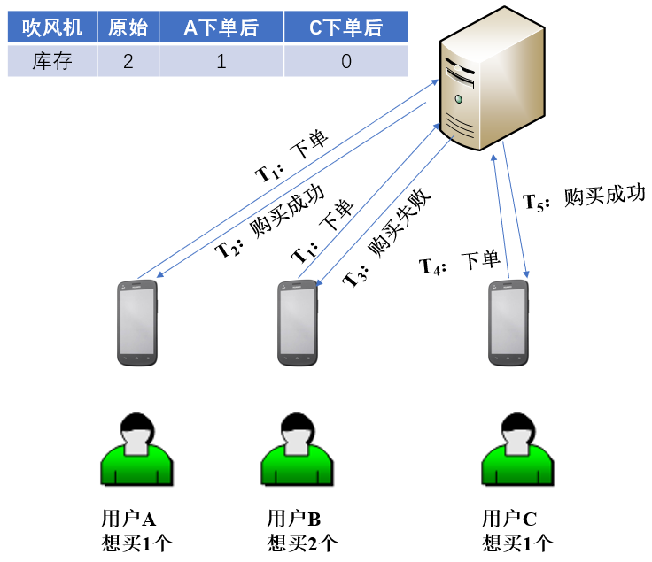
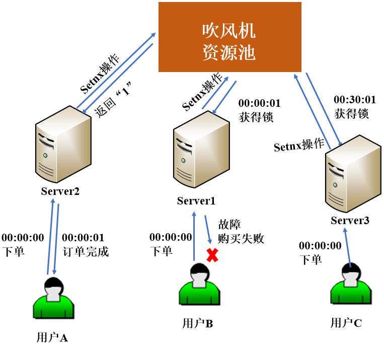
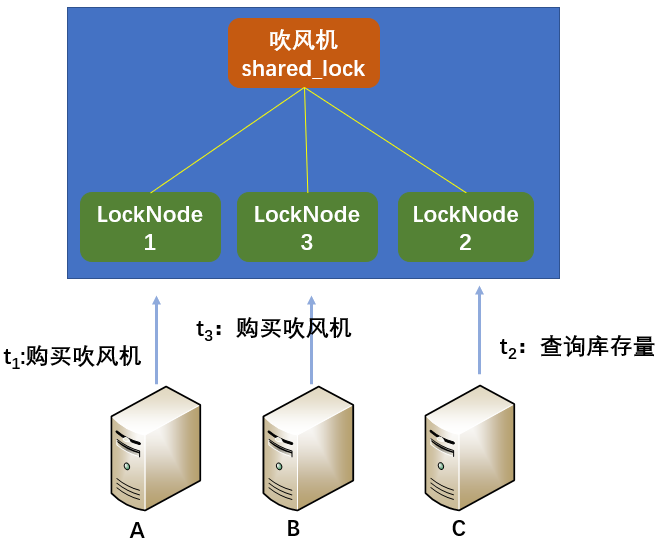
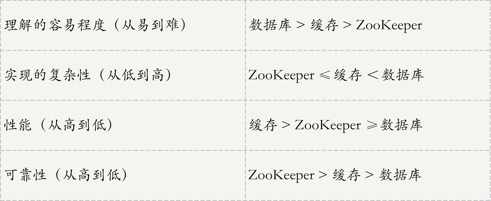
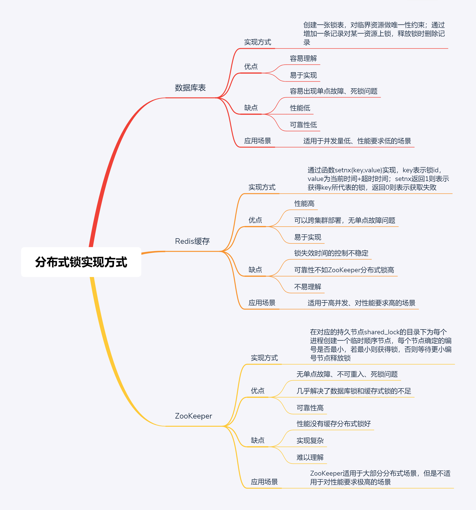

- 00 开篇词 四纵四横，带你透彻理解分布式技术.md.html
- 01 分布式缘何而起：从单兵，到游击队，到集团军.md.html
- 02 分布式系统的指标：啥是分布式的三围.md.html
- 03 分布式互斥：有你没我，有我没你.md.html
- 04 分布式选举：国不可一日无君.md.html
- 05 分布式共识：存异求同.md.html
- 06 分布式事务：All or nothing.md.html
- 07 分布式锁：关键重地，非请勿入.md.html
- 08 分布式技术是如何引爆人工智能的？.md.html
- 09 分布式体系结构之集中式结构：一人在上，万人在下.md.html
- 10 分布式体系结构之非集中式结构：众生平等.md.html
- 11 分布式调度架构之单体调度：物质文明、精神文明一手抓.md.html
- 12 分布式调度架构之两层调度：物质文明、精神文明两手抓.md.html
- 13 分布式调度架构之共享状态调度：物质文明、精神文明多手协商抓.md.html
- 14 答疑篇：分布式事务与分布式锁相关问题.md.html
- 15 分布式计算模式之MR：一门同流合污的艺术.md.html
- 16 分布式计算模式之Stream：一门背锅的艺术.md.html
- 17 分布式计算模式之Actor：一门甩锅的艺术.md.html
- 18 分布式计算模式之流水线：你方唱罢我登场.md.html
- 19 分布式通信之远程调用：我是你的千里眼.md.html
- 20 分布式通信之发布订阅：送货上门.md.html
- 21 分布式通信之消息队列：货物自取.md.html
- 22 答疑篇：分布式体系架构与分布式计算相关问题.md.html
- 23 CAP理论：这顶帽子我不想要.md.html
- 24 分布式数据存储系统之三要素：顾客、导购与货架.md.html
- 25 数据分布方式之哈希与一致性哈希：“掐指一算”与“掐指两算”的事.md.html
- 26 分布式数据复制技术：分身有术.md.html
- 27 分布式数据之缓存技术：“身手钥钱”随身带.md.html
- 28 分布式高可靠之负载均衡：不患寡，而患不均.md.html
- 29 分布式高可靠之流量控制：大禹治水，在疏不在堵.md.html
- 30 分布式高可用之故障隔离：当断不断，反受其乱.md.html
- 31 分布式高可用之故障恢复：知错能改，善莫大焉.md.html
- 32 答疑篇：如何判断并解决网络分区问题？.md.html
- 33 知识串联：以购买火车票的流程串联分布式核心技术.md.html
- 34 搭建一个分布式实验环境：纸上得来终觉浅，绝知此事要躬行.md.html
- 特别放送 Jackey：寄语天涯客，轻寒底用愁.md.html
- 特别放送 分布式下的一致性杂谈.md.html
- 特别放送 崔新：追根溯源，拨开云雾见青天.md.html
- 特别放送 徐志强：学习这件事儿，不到长城非好汉.md.html
- 特别放送 那些你不能错过的分布式系统论文.md.html
- 结束语 为什么说提升职业竞争力要从尊重、诚实开始？.md.html
- 捐赠
07 分布式锁：关键重地，非请勿入
你好，我是聂鹏程。今天，我来继续带你打卡分布式核心技术。
我在第3篇文章中，与你一起学习了分布式互斥，领悟了其“有你没我，有我没你”的精髓，为你解释了同一临界资源同一时刻只能被一个程序访问的问题，并介绍了解决分布式互斥的算法。
不知道你有没有发现一个细节，在之前介绍的算法中，我主要讲了如何协调多个进程获取权限和根据权限有序访问共享资源，“获得访问权限的进程可以访问共享资源，其他进程必须等待拥有该权限的进程释放权限”。但是，我并没有介绍在访问共享资源时，这个权限是如何设置或产生的，以及设置或产生这个权限的工作原理是什么。
那么，在本讲，我就将带你一起打卡分布式锁，去学习分布式锁是如何解决这个问题的。
为什么要使用分布锁？
首先，我先带你认识一下什么是锁。
在单机系统中，经常会有多个线程访问同一种资源的情况，我们把这样的资源叫做共享资源，或者叫做临界资源。为了维护线程操作的有效性和正确性，我们需要某种机制来减少低效率的操作，避免同时对相同数据进行不一样的操作，维护数据的一致性，防止数据丢失。也就是说，我们需要一种互斥机制，按照某种规则对多个线程进行排队，依次、互不干扰地访问共享资源。
这个机制指的是，为了实现分布式互斥，在某个地方做个标记，这个标记每个线程都能看到，到标记不存在时可以设置该标记，当标记被设置后，其他线程只能等待拥有该标记的线程执行完成，并释放该标记后，才能去设置该标记和访问共享资源。这里的标记，就是我们常说的锁。
也就是说，锁是多线程同时访问同一资源的场景下，为了让线程互不干扰地访问共享资源，从而保证操作的有效性和正确性的一种标记。
与普通锁不同的是，分布式锁是指分布式环境下，系统部署在多个机器中，实现多进程分布式互斥的一种锁。为了保证多个进程能看到锁，锁被存在公共存储（比如Redis、Memcached、数据库等三方存储中），以实现多个进程并发访问同一个临界资源，同一时刻只有一个进程可访问共享资源，确保数据的一致性。
那什么场景下需要使用分布式锁呢？
比如，现在某电商要售卖某大牌吹风机（以下简称“吹风机”），库存只有2个，但有5个来自不同地区的用户{A,B,C,D,E}几乎同时下单，那么这2个吹风机到底会花落谁家呢？
你可能会想，这还不简单，谁先提交订单请求，谁就购买成功呗。但实际业务中，为了高并发地接收大量用户订单请求，很少有电商网站真正实施这么简单的措施。
此外，对于订单的优先级，不同电商往往采取不同的策略，比如有些电商根据下单时间判断谁可以购买成功，而有些电商则是根据付款时间来判断。但，无论采用什么样的规则去判断谁能购买成功，都必须要保证吹风机售出时，数据库中更新的库存是正确的。为了便于理解，我在下面的讲述中，以下单时间作为购买成功的判断依据。
我们能想到的最简单方案就是，给吹风机的库存数加一个锁。当有一个用户提交订单后，后台服务器给库存数加一个锁，根据该用户的订单修改库存。而其他用户必须等到锁释放以后，才能重新获取库存数，继续购买。
在这里，吹风机的库存就是共享资源，不同的购买者对应着多个进程，后台服务器对共享资源加的锁就是告诉其他进程“关键重地，非请勿入”。
但问题就这样解决了吗？当然没这么简单。
想象一下，用户A想买1个吹风机，用户B想买2个吹风机。在理想状态下，用户A网速好先买走了1个，库存还剩下1个，此时应该提示用户B库存不足，用户B购买失败。但实际情况是，用户A和用户B同时获取到商品库存还剩2个，用户A买走1个，在用户A更新库存之前，用户B又买走了2个，此时用户B更新库存，商品还剩0个。这时，电商就头大了，总共2个吹风机，却卖出去了3个。
不难看出，如果只使用单机锁将会出现不可预知的后果。因此，在高并发场景下，为了保证临界资源同一时间只能被一个进程使用，从而确保数据的一致性，我们就需要引入分布式锁了。
此外，在大规模分布式系统中，单个机器的线程锁无法管控多个机器对同一资源的访问，这时使用分布式锁，就可以把整个集群当作一个应用一样去处理，实用性和扩展性更好。
分布式锁的三种实现方法及对比
接下来，我带你看看实现分布式锁的3种主流方法，即：
- 基于数据库实现分布式锁，这里的数据库指的是关系型数据库；
- 基于缓存实现分布式锁；
- 基于ZooKeeper实现分布式锁。
基于数据库实现分布式锁
实现分布式锁最直接的方式通过数据库进行实现，首先创建一张表用于记录共享资源信息，然后通过操作该表的数据来实现共享资源信息的修改。
当我们要锁住某个资源时，就在该表中增加一条记录，想要释放锁的时候就删除这条记录。数据库对共享资源做了唯一性约束，如果有多个请求被同时提交到数据库的话，数据库会保证只有一个操作可以成功，操作成功的那个线程就获得了访问共享资源的锁，可以进行操作。
基于数据库实现的分布式锁，是最容易理解的。但是，因为数据库需要落到硬盘上，频繁读取数据库会导致IO开销大，因此这种分布式锁适用于并发量低，对性能要求低的场景。对于双11、双12等需求量激增的场景，数据库锁是无法满足其性能要求的。而在平日的购物中，我们可以在局部场景中使用数据库锁实现对资源的互斥访问。
下面，我们还是以电商售卖吹风机的场景为例。吹风机库存是2个，有3个来自不同地区的用户{A,B,C}想要购买，其中用户A想买1个，用户B想买2个，用户C想买1个。
用户A和用户B几乎同时下单，但用户A的下单请求最先到达服务器。因此，该商家的产品数据库中增加了一条关于用户A的记录，用户A获得了锁，他的订单请求被处理，服务器修改吹风机库存数，减去1后还剩下1个。
当用户A的订单请求处理完成后，有关用户A的记录被删除，服务器开始处理用户B的订单请求。这时，库存只有1个了，无法满足用户B的订单需求，因此用户B购买失败。
从数据库中，删除用户B的记录，服务器开始处理用户C的订单请求，库存中1个吹风机满足用户C的订单需求。所以，数据库中增加了一条关于用户C的记录，用户C获得了锁，他的订单请求被处理，服务器修改吹风机数量，减去1后还剩下0个。

可以看出，基于数据库实现分布式锁比较简单，绝招在于创建一张锁表，为申请者在锁表里建立一条记录，记录建立成功则获得锁，消除记录则释放锁。该方法依赖于数据库，主要有两个缺点：
- 单点故障问题。一旦数据库不可用，会导致整个系统崩溃。
- 死锁问题。数据库锁没有失效时间，未获得锁的进程只能一直等待已获得锁的进程主动释放锁。倘若已获得共享资源访问权限的进程突然挂掉、或者解锁操作失败，使得锁记录一直存在数据库中，无法被删除，而其他进程也无法获得锁，从而产生死锁现象。
基于缓存实现分布式锁
数据库的性能限制了业务的并发量，那么对于双11、双12等需求量激增的场景是否有解决方法呢？
基于缓存实现分布式锁的方式，非常适合解决这种场景下的问题。所谓基于缓存，也就是说把数据存放在计算机内存中，不需要写入磁盘，减少了IO读写。接下来，我以Redis为例与你展开这部分内容。
Redis通常可以使用setnx(key, value)函数来实现分布式锁。key和value就是基于缓存的分布式锁的两个属性，其中key表示锁id，value = currentTime + timeOut，表示当前时间+超时时间。也就是说，某个进程获得key这把锁后，如果在value的时间内未释放锁，系统就会主动释放锁。
setnx函数的返回值有0和1：
- 返回1，说明该服务器获得锁，setnx将key对应的value设置为当前时间 + 锁的有效时间。
- 返回0，说明其他服务器已经获得了锁，进程不能进入临界区。该服务器可以不断尝试setnx操作，以获得锁。
我还是以电商售卖吹风机的场景为例，和你说明基于缓存实现的分布式锁，假设现在库存数量是足够的。
用户A的请求因为网速快，最先到达Server2，setnx操作返回1，并获取到购买吹风机的锁；用户B和用户C的请求，几乎同时到达了Server1和Server3，但因为这时Server2获取到了吹风机数据的锁，所以只能加入等待队列。
Server2获取到锁后，负责管理吹风机的服务器执行业务逻辑，只用了1s就完成了订单。订单请求完成后，删除锁的key，从而释放锁。此时，排在第二顺位的Server1获得了锁，可以访问吹风机的数据资源。但不巧的是，Server1在完成订单后发生了故障，无法主动释放锁。
于是，排在第三顺位的Server3只能等设定的有效时间（比如30分钟）到期，锁自动释放后，才能访问吹风机的数据资源，也就是说用户C只能到00:30:01以后才能继续抢购。

总结来说，Redis通过队列来维持进程访问共享资源的先后顺序。Redis锁主要基于setnx函数实现分布式锁，当进程通过setnx
相对于基于数据库实现分布式锁的方案来说，基于缓存实现的分布式锁的优势表现在以下几个方面：
- 性能更好。数据被存放在内存，而不是磁盘，避免了频繁的IO操作。
- 很多缓存可以跨集群部署，避免了单点故障问题。
- 使用方便。很多缓存服务都提供了可以用来实现分布式锁的方法，比如Redis的setnx和delete方法等。
- 可以直接设置超时时间（例如expire key timeout）来控制锁的释放，因为这些缓存服务器一般支持自动删除过期数据。
这个方案的不足是，通过超时时间来控制锁的失效时间，并不是十分靠谱，因为一个进程执行时间可能比较长，或受系统进程做内存回收等影响，导致时间超时，从而不正确地释放了锁。
为了解决基于缓存实现的分布式锁的这些问题，我们再来看看基于ZooKeeper实现的分布式锁吧。
基于ZooKeeper实现分布式锁
ZooKeeper基于树形数据存储结构实现分布式锁，来解决多个进程同时访问同一临界资源时，数据的一致性问题。ZooKeeper的树形数据存储结构主要由4种节点构成：
- 持久节点（PERSISTENT）。这是默认的节点类型，一直存在于ZooKeeper中。
- 持久顺序节点（PERSISTENT_SEQUENTIAL）。在创建节点时，ZooKeeper根据节点创建的时间顺序对节点进行编号命名。
- 临时节点（EPHEMERAL）。当客户端与Zookeeper连接时临时创建的节点。与持久节点不同，当客户端与ZooKeeper断开连接后，该进程创建的临时节点就会被删除。
- 临时顺序节点（EPHEMERAL_SEQUENTIAL）。就是按时间顺序编号的临时节点。
根据它们的特征，ZooKeeper基于临时顺序节点实现了分布锁。
还是以电商售卖吹风机的场景为例。假设用户A、B、C同时在11月11日的零点整提交了购买吹风机的请求，ZooKeeper会采用如下方法来实现分布式锁：
- 在与该方法对应的持久节点shared_lock的目录下，为每个进程创建一个临时顺序节点。如下图所示，吹风机就是一个拥有shared_lock的目录，当有人买吹风机时，会为他创建一个临时顺序节点。
- 每个进程获取shared_lock目录下的所有临时节点列表，注册Watcher，用于监听子节点变更的信息。当监听到自己的临时节点是顺序最小的，则可以使用共享资源。
- 每个节点确定自己的编号是否是shared_lock下所有子节点中最小的，若最小，则获得锁。例如，用户A的订单最先到服务器，因此创建了编号为1的临时顺序节点LockNode1。该节点的编号是持久节点目录下最小的，因此获取到分布式锁，可以访问临界资源，从而可以购买吹风机。
- 若本进程对应的临时节点编号不是最小的，则分为两种情况：
- 本进程为读请求，如果比自己序号小的节点中有写请求，则等待；
- 本进程为写请求，如果比自己序号小的节点中有请求，则等待。
例如，用户B也想要买吹风机，但在他之前，用户C想看看吹风机的库存量。因此，用户B只能等用户A买完吹风机、用户C查询完库存量后，才能购买吹风机。

可以看到，使用ZooKeeper实现的分布式锁，可以解决前两种方法提到的各种问题，比如单点故障、不可重入、死锁等问题。但该方法实现较复杂，且需要频繁地添加和删除节点，所以性能不如基于缓存实现的分布式锁。
三种实现方式对比
我通过一张表格来对比一下这三种方式的特点，以方便你理解、记忆。

值得注意的是，这里的实现复杂性，是针对同样的分布式锁的实现复杂性，与之前提到的基于数据库的实现非常简易不一样。
基于数据库实现的分布式锁存在单点故障和死锁问题，仅仅利用数据库技术去解决单点故障和死锁问题，是非常复杂的。而ZooKeeper已定义相关的功能组件，因此可以很轻易地解决设计分布式锁时遇到的各种问题。所以说，要实现一个完整的、无任何缺陷的分布式锁，ZooKeeper是一个最简单的选择。
总结来说，ZooKeeper分布式锁的可靠性最高，有封装好的框架，很容易实现分布式锁的功能，并且几乎解决了数据库锁和缓存式锁的不足，因此是实现分布式锁的首选方法。
从上述分析可以看出，为了确保分布式锁的可用性，我们在设计时应考虑到以下几点：
- 互斥性，即在分布式系统环境下，对于某一共享资源，需要保证在同一时间只能一个线程或进程对该资源进行操作。
- 具备锁失效机制，防止死锁。即使出现进程在持有锁的期间崩溃或者解锁失败的情况，也能被动解锁，保证后续其他进程可以获得锁。
- 可重入性，即进程未释放锁时，可以多次访问临界资源。
- 有高可用的获取锁和释放锁的功能，且性能要好。
知识扩展：如何解决分布式锁的羊群效应问题？
在分布式锁问题中，会经常遇到羊群效应。
所谓羊群效应，就是在整个ZooKeeper分布式锁的竞争过程中，大量的进程都想要获得锁去使用共享资源。每个进程都有自己的“Watcher”来通知节点消息，都会获取整个子节点列表，使得信息冗余，资源浪费。
当共享资源被解锁后，Zookeeper会通知所有监听的进程，这些进程都会尝试争取锁，但最终只有一个进程获得锁，使得其他进程产生了大量的不必要的请求，造成了巨大的通信开销，很有可能导致网络阻塞、系统性能下降。
那如何解决这个问题呢？具体方法可以分为以下三步。
- 在与该方法对应的持久节点的目录下，为每个进程创建一个临时顺序节点。
- 每个进程获取所有临时节点列表，对比自己的编号是否最小，若最小，则获得锁。
- 若本进程对应的临时节点编号不是最小的，则注册Watcher，监听自己的上一个临时顺序节点，当监听到该节点释放锁后，获取锁。
总结
我以电商购物为例，首先带你剖析了什么是分布式锁，以及为什么需要分布式锁；然后，与你介绍了三种实现分布式锁的方法，包括基于数据库实现、基于缓存实现（以Redis为例），以及基于ZooKeeper实现。
分布式锁是解决多个进程同时访问临界资源的常用方法，在分布式系统中非常常见，比如开源的ZooKeeper、Redis中就有所涉及。通过今天这篇文章对分布式锁原理及方法的讲解，我相信你会发现分布式锁不再那么神秘、难懂，然后以此为基础对分布式锁进行更深入的学习和应用。
接下来，我把今天的内容通过下面的一张思维导图再全面总结下。

思考题
分布式锁与分布式互斥的关系是什么呢？
我是聂鹏程，感谢你的收听，欢迎你在评论区给我留言分享你的观点，也欢迎你把这篇文章分享给更多的朋友一起阅读。我们下期再会！
© 2019 - 2023 Liangliang Lee. Powered by gin and hexo-theme-book.